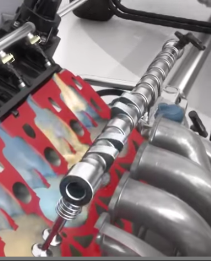
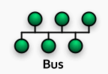
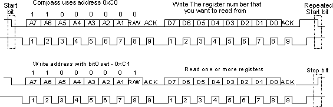
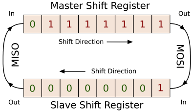
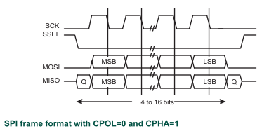
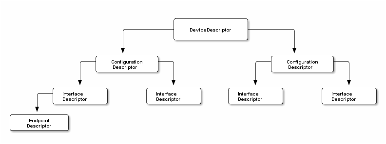
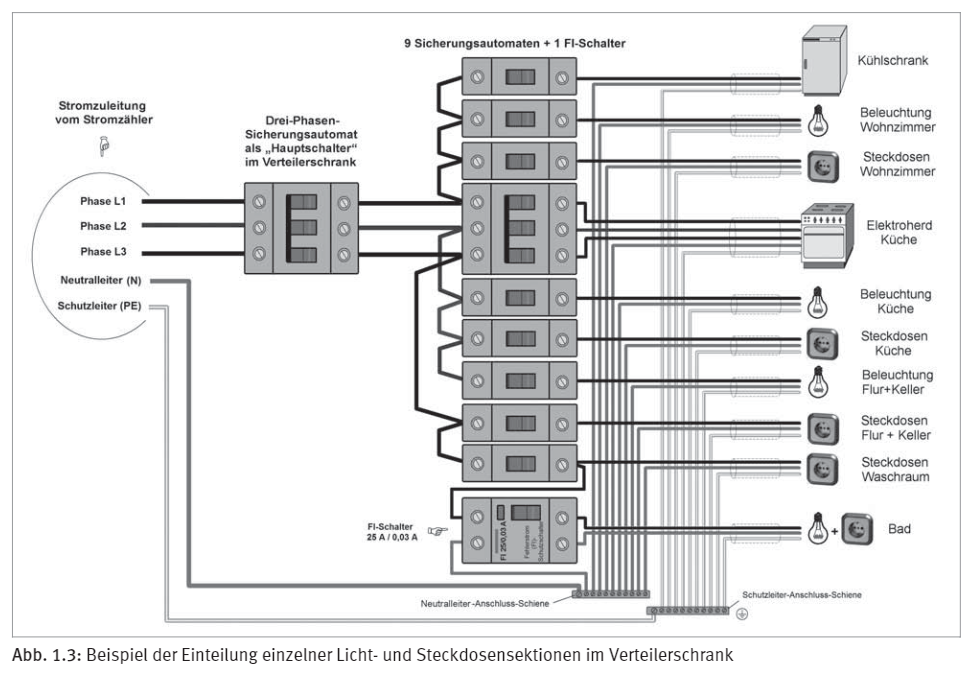

Electronics
Fahrzeugtechnik
Terminologie
EPS … Elektronisches Stabilitätsprogramm umfasst Fahrdynamikregelung: ABS, APS, grundsätzlich geht es ums Bremsen OBD … On-Board-Diagnose (OBD-Buchse)
Motorsteuergeräte
Wichtigster Input: Gaspedal (Wunsch nach mehr Drehmoment)
INPUT: Gaspedalstellung, Motordrehzahl, Drosselklappenstellung, Temperatur, versch. Drücke, Klopfsensor OUTPUT: Aktivierung der Zündung, der Einspritzventile, Drosselklappensteller, Turbolader, Nockenwellenversteller
Sensorik
Berechnung der Drosselklappenstellung
Ansaugluftmenge, Luftdrucksensor, Motordrehzahl: Luftmasse für Einspritzung berechnen (Drosselklappe regelt die Luftzufuhr)
Berechnung des Drehmoments
Kurbelwellensensor, Klopfsensor, Temperatursensor, Nockenwellensensor

WLan
What do the b/g/n/a/ac letters mean?
- a: 5 GHz-Band, bis zu 54 Mbits/s
- b: 2.4 GHz-Band, bis zu 11 Mbits/s
- g: 2.4 GHz-Band, bis zu 54 Mbits/s
- n: 2.4 & 5 GHz-Band, bis zu 600 Mbits/s
- ac: 5 GHz-Band, bis zu 1.3 Gbits/s
Bus Systems
General Comments
A bus is a collection of wires connecting different devices.
Kinds of data transfer
Synchronous I/O (blocking)
Synchronization is done via a common clock signal.
Start data transfer and wait until it's finished, i.e. someone (a process or a thread) is waiting until the operation is complete (usually a function call is blocking the process). In other words nothing else can be done while the transfer is running.
Asynchronous I/O (non-blocking)
Don't wait for finish of the data transfer. This means while the transfer is running processing can continue. In other words something else can be done while the transfer is running.
- clk has to be synchronized (e.g. start, stop bits, different default speeds)
- data can be sent any time
(In Windows also called Overlapped I/O.)
The communication is started but the calling process or thread immediately
returns from the call and doesn't wait for the operation to complete.
The completion of the transfer has to trigger something else, i.e. a callback
function is called or a flag is set.
Synchronization is done using special signals (symbols).
Serial vs. parallel communication
One bit at a time.
Arbitration
(Vergabe des Buszugriffs) Who gets the bus?
When there is more than one MCU (Master Control Unit) on the bus it might happen that e.g. MCU2 wants to initiate a communication while there is still another data transfer initiated by MCU1 active.
A Central Bus-Arbiter decides which component will get the bus next. There might be a bus request line for each component.
Duplex
- Half duplex (Wechselsprechen, Funk: alle Teilnehmer sprechen auf der selben Frequenz) Two-way alternate communication, one party can communicate while the other is listening (e.g. Walkie-Talkie with a push-to-talk button).
- Full duplex (Gegensprechen, Funk: zwei unterschiedliche Frequenzen, Oberband und Unterband) Both parties can communicate at the same time (e.g. Telephone).
Open Drain / Collector
A open drain pin can pull it's output low, but not high. Therefor a pull up resistor has to be provided. Imagine a rubber band that is being pulled down by a transistor and flips back when it's released.
Masters and Slaves
Masters initiate data transfers, Slaves are told what to do. Normally there is only one master at a time.
CAN Bus
- 2(3) Leitungen: CAN-Hi, CAN-Lo (Differenzsignal), evtl. GND dominanter und rezessiver Zustand (3.5V, 2.5V), lo = 1.5V
- ca. 500 kBit/s (bis 1MBit/s)
- mehrere Busmaster, alle können gleichzeitig kommunizieren (nicht deterministisch) Bus-Arbitrierung (Konfliktauflösung) nötig: dom./rez. Bits
- NRZ (non return to 0) Kodierung, d.h. 0-hi, 1-lo
- ID (11-bit) identifiziert die Datenquelle, den Sendeknoten, der Empfänger entscheidet ob ihn die Nachricht interessiert oder nicht.
Tools
CANoe/CANalyzer CANape
Ethernet
FlexRay
für sicherheitsrelevante Anwendungen (steer by wire, brake by wire, etc.)
- 2 Kommunikationskanäle
- hohe Datenrate (10 Mbit/s pro Kanal)
- echtzeitfähig (garantierte Latenzzeiten)
Stern- und Bustopologie möglich

- fixe Kommunikationszyklen (Endlosloop)
I2C
(Inter integrated Circuit)
Derived from I2C are System Management Bus (SM Bus) and Power Management Bus (PM Bus).
Operation Modes:
Master Transmitter
Master addresses Slave with R/W = 0 and sends n bytes to the slave. Each byte is followed by an ACK or NACK if slave wants no more data.

Master Receiver
Master addresses Slave with R/W = 1 and expects data immediately.

Slave Receiver
Slave is addressed with R/W = 0 and starts receiving bytes from Master.

Slave Transmitter
Slave is addresses with R/W = 1 and starts sending bytes to Master. Note: In this case the master has to send a NACK before generating STOP.
Example

- START begins the transfer.
- Reading from a Slave Device. First the R/W-bit is 0 then 1 for reading.
- STOP ends the transfer.
Hardware
Two active wires (SDA, SCL) and (VDD), GND connections. Master provides the clock.
- Master-Slave-Bus (Multimaster mode) More than one device can initiate data transfers. But only one at a time.
- 128 (7 bits) possible addresses (112 can be used) 16 are reserved for special purposes.
- half duplex
- 2 wire: SCA (data), SCL (clock) Open drain outputs are used. When the bus is idle the lines are in HIGH state (pull up). To put a signal on the bus an IC needs to turn on its output transistor thus pulling the line to LOW.
- 100 kHz (standard: 0.1 Mbit/s), 400 kHz (fast-mode: 0.4 Mbit/s)
- Arbitration Guaranteed by design: If the bus is occupied some IC is sending a 0 and no other IC can initiate a transfer.
- Drawbacks The open drain technique has a serious effect on the speed for long bus lines.
Protocol
- Bit-Encoding: 1 - high, 0 - low
- MSB first
Transmission Data transfer happens between the START and STOP sequences. In between the bus is busy. Data transmission happens byte wise. Data from Slave (S) or data to Slave. Each byte has to be acknowledged.
START | ADDRESS | ACK (S) | Byte1 (S or M) | ACK (M or S) |...| STOP
E.g. ADDRESS: 1100 0000 means address 0xC0 R/W bit = 0 (device will receive)
The first byte send by the master is a standard I2C-address, the first 7 bits are the actual address, the last bit (R/W-bit) tells the device if it receives data (0-LOW) or should send data (1-high).
The Slave is allowed to hold the SCL line low when it sends data back if it needs to pause the transaction (clock stretching).
LIN Bus
(local interconnet network)
- Kommunikation zwischen lokalen Sensoren & Aktuatoren
- billiger Ersatz für CAN
- Eindraht-Bus
- 1 Master, n Slaves
MOST
(Media Oriented Systems Transport) Netzwerk für Multimediadaten.
SD Card
All SD Cards should work with 2.7V to 3.6V (typically 3.3V).
Pinout:

Communication with SD Cards works via commands.
Command Format:

There are different response formats (R1, R2, R3, etc.).
Transfer modes
- SPI : Simplest mode, can be used with most microcontrollers.
- 1 Bit : CMD + Data Line
- 4 Bit : CMD + 4 Data Lines
The first commands for initialization of the SD-Card are sent with lower frequency (e.g. 400kHz) in SPI mode, later frequency and mode are changed to the normal use settings.
SPI
(Serial Peripheral Interface)
Master-Slave 4-wire Bus with a single master. Slaves are selected with individual slave lines. The master has to know how much data the slave returns, because that is how much clock cycles it will generate.
Properties:
- Master-Slave
- serial communication, 4-16 bits per data frame
- 3 wires: SCK, MOSI (Master Output Slave Input) auch SDO (serial data out) MISO auch SDI (serial data in)
- full duplex, every read is also a write
- synchronous same clock: When the master clocks, the data on the MISO line counts!
- data-rate: 1/2 clk
- ~ 16 devices (not 100)
From a hardware point of view the bus is simply a connection of two shift registers in a ring topology.

Master and Slave load their shift registers, then it takes eight clock cycles to shift the date around, then the received data can be read and the shift registers will be loaded again.
Notes
- Motorola frame format (also SPI frame format): see the 4 modes below
- Texas Instruments frame format
- Microwire frame format
Modes
Modes:
CPOLClock Polarity bit (0 - Active High, 1 - Active Low)CPHAPhase Control bit - timing of data relative to clock
(0 - data valid on first edge after SSEL, rising, 1 - data valid on second edge after SSEL, falling)
Notes:
- When
CPHAis 0 theSSELpin has to be pulled high between frames (ARM - not sure if it holds generally). Mode 0 (CPOL=0, CPHA=0)

Mode 1 (CPOL=0, CPHA=1)

Mode 2 (CPOL=1, CPHA=0)

Mode 3 (CPOL=1, CPHA=1)

UART
(Universal Asynchronous Receiver Transmitter)
UART is device for asynchronous serial communication. Data format and transmission speeds can be configured.
Data Frame:
| Start Bit | Bit0 | … | Bit7 | Stop Bit |
RS232
RS232
RS485
- differential data signal (twisted pair)
- 3-state logic
- transmitters can be turned off
- linear bus with 2 wires
- noisy environments
- up to 10 Mb/s
- up to 1200 m
USB
- USB in a NutShell: - https://www.beyondlogic.org/usbnutshell/usb1.shtml
Overview
- Tree structure with max. 7 layers, hubs are nodes, devices are leafs
- 11 bit address
- polling: host checks for communication
- communication in packets (URB: USB Request Block)
4 types of packets
- Token (IN, OUT, Setup)
- Data
- Handshake
- Start of Frame
- max. 127 devices
- different transfer speeds available (slow, normal, fast, high)
- 4 transfer (endpoint) types: CONTROL, BULK, INTERRUPT, ISOCHRONOUS
- CONTROL Each USB device has at least on control pipe (default).
- BULK Large data, guarantee of delivery. Error correction.
- INTERRUPT E.g. HID
- ISOCHRONOUS Typically audio or video stream (time sensitive info). Packets might be dropped.
- max. 16 IN and 16 OUT endpoints
Pipes Logical connection between host and endpoint(s). Two types of USB pipes
- Stream (no defined format)
- Message
Parameters: (e.g.)
- max. bandwith
- transfer type (control, bulk, isochronous, interrupt)
- direction
- max. packet size
Default Pipe 0 (corresponding to Endpoint 0) always exists. It's needed for the device setup process.
- 2 kinds of data exchange: Functional and Control
- Functional: move data back and forth (BULK, INTERRUPT, ISOCHRONOUS)
- Control: configure device when attached via default Pipe 0.
USB communication is done using buffers called Endpoints. Endpoints have a transfer direction (IN, OUT) viewed from the Host. Endpoint 0 is reserved for control purposes (read Device Descriptors and control commands). A USB device can have 16 OUT and 16 IN Endpoints.
Every USB data transfer is between a host and a device endpoint.
Each device has an address and multiple endpoints. The communication is serial, LSB first, organized in packets.
Speeds
- SuperSpeed+ 2.5 GB/s (USB 3.1)
- SuperSpeed+ 1.25 GB/s (USB 3.2)
- SuperSpeed 625 MB/s
- High Speed 60 MB/s
- Full Speed 1.5 MB/s
USB Protocols
USB transactions consist of packets.
- Token packet (Host says what it wants from the device, e.g. IN- OUT-Tokens)
- Data Packet (payload)
- Handshake Packet (acknowledge, error correction)
All packets start with:
| Sync | PID | … | (CRC) | EOP |
- EOP : End of Packet
- CRC: CRC5 and CRC16
PID (Packet ID)
Identify the type of packet.

Token Packets
| Sync | PID | ADDR | ENDP | CRC5 | EOP |
- IN
- OUT
- SETUP
Data Packets
| Sync | PID | EOP |
Types:
- DATA0
- DATA1
- DATA2
- MDATA
Handshake Packets
| Sync | PID | EOP |
- ACK
- NAK
- STALL
Requests send from the Host
- Device Descriptor request
Device Classes
The functionality of a device is defined by sending the class code (1 byte) to the host. Examples:
- 0x03 : HID
- 0xFF : Vendor-specific
Endpoint Types
Those correspond to different types of transfer.
Control Transfers
Set up a device. 3 stages
- Setup Stage
- Data Stage
- Status Stage
Examples:
- Enumeration: Host sends device descriptor request
Interrupt Transfers
Since the host is polling a device needs to wait until it gets attention. So interrupt requests are queued on the device side until the host polls the device.
Maximum data size
- full-speed: 64 bytes
- high-speed: 1024 bytes
Bulk Transfers
Isochronous Transfers
Enumeration Process
USB Descriptors
https://www.beyondlogic.org/usbnutshell/usb5.shtml#StringDescriptors
How is a USB connection identified?
Host gives addresses to the connected devices. The devices give back information about itself in form of a series of descriptors.
- ONE Device Descriptor
Vendor and Product ID
- MULTIPLE Configuration Descriptors
USB devices have a hierarchy of descriptors.

Descriptor Types:
- Device Descriptors (ONE only) (Type: 0x01)
- USB version
- product and vendor id
- Configuration Descriptors (0x02)
- power usage
- Interface Descriptors (0x04)
- Endpoint Descriptors (0x05)
- String Descriptors (optional) (0x03)
- provide human readable info
Device Setup
When the device is attached to the host system a setup stage is initiated. A 8-byte Setup Packet is sent to Endpoint 0 (default pipe). Every USB device must respond to setup packets.

The host sends requests to the device: Device, Interface, Endpoint Requests.
Standard Device Requests:

Standard Interface Requests:

Standard Endpoint Requests:

Software
Device
When the host is polling a device an interrupt handler is called. Most of the complexity mentioned above is of no concern to the programmer.
Host
The usb interface is accessed through a file. You might have a thread handling incoming data.
Then you call a function (e.g. WaitForMultipleObjects on windows) that puts the thread to sleep
if nothing happens.
You might open pipes (Stream, Message).
Elektroinstallationen
Hausinstallation - Überblick

Normen
- OVE E 8101 - Errichtungsbestimmungen für elektrische Niederspannungsanlagen
IOT
MQTT (Message Queue Telemetry Transport)
All communication goes via the MQTT-Broker. Devices don't know anything about each other, they only communicate with the Broker.
Ports:
- 1883
- 8883 (encrypted)
MQTT is based on TCP and has a 2 Byte Header.
- Byte 1
- Message Type (4 bit) Quality of Service (2 bit) Retain Flag
- Byte 2
- Length of the rest of the package
The rest of the package is of variable length beginning with the Topic
(e.g. /home/rooms/kitchen/temperature).
Message Types:
- PUBLISH
- Topic + Data (Payload)
- SUBSCRIBE
- subscript to a topic
- UNSUBSCRIBE
- CONNECT
- (no term)
- DISCONNE ::CT
- CONNACK
- PUBACK
- PUBREC
- PUBREL
- PUBCOMP
- SUBACK
- UNSUBACK
- PINGREQ
- PINGRESP
The symbol # allows to receive everything below a certain level in the topic.
E.g. /level1/level2/#